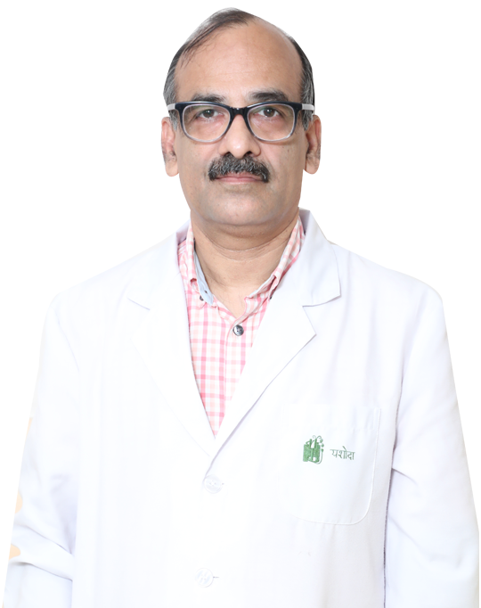

Dr. Ashish Prakash
A pediatrician and neonatologist with over 30 years of practice, Dr. Ashish Prakash is among the most-respected child specialists in Ghaziabad and the Delhi NCR. He completed his MBBS and MD from AIIMS, New Delhi. Before his Australian fellowship, he served as Senior Resident at Mowasat Hospital, Kuwait (1992–93), then trained in advanced neonatology at the Children's Hospital at Westmead and Royal Alexandra Hospital for Children in Sydney (1993–97).
He set up the first Level III Neonatal Unit in western Uttar Pradesh — bringing ventilation, surfactant therapy, and parenteral nutrition for premature babies to Ghaziabad, so families no longer needed to be referred to Delhi. Today he is Senior Consultant and Head of Neonatology at Yashoda Super Speciality Hospitals, and leads care for newborns, premature babies, and children up to adolescence.
- 2002 — TodaySenior Consultant & Head of NeonatologyYashoda Super Speciality Hospitals, Ghaziabad
- 2007 — 2011Head of NeonatologyFortis Hospital, Noida
- 2006 — 2016Professor & Head of Department of PediatricsSubharti University, Meerut
- 1993 — 1997Senior Registrar, NeonatologyChildren's Hospital at Westmead & Royal Alexandra Hospital for Children, Sydney, Australia
- 1992 — 1993Senior ResidentMowasat Hospital, Kuwait
- 1988 — 1991MD, PediatricsAll India Institute of Medical Sciences (AIIMS), New Delhi
- 1982 — 1987MBBSAll India Institute of Medical Sciences (AIIMS), New Delhi